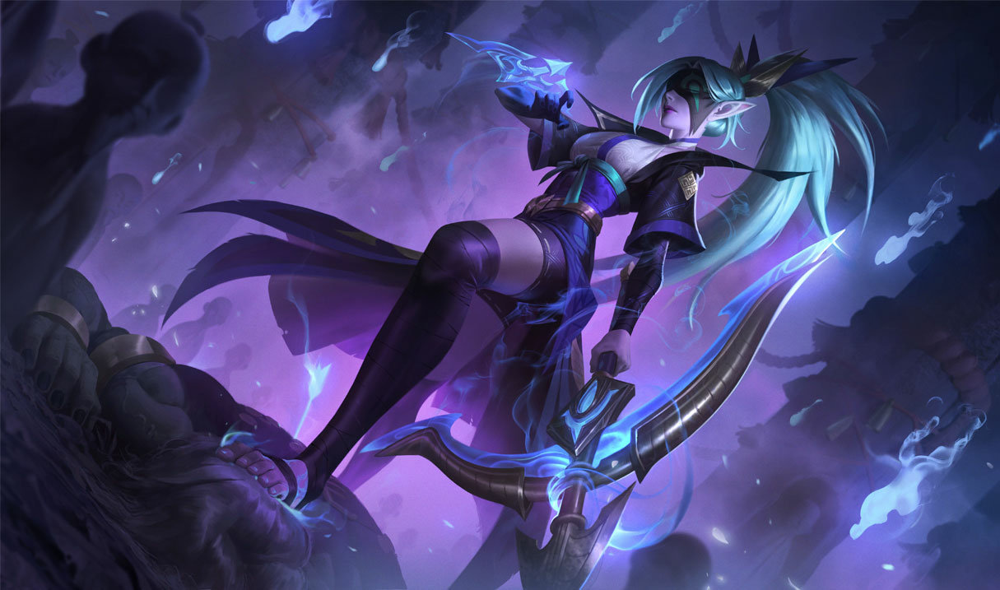

História da Vayne
O mundo não é tão civilizado quanto pensam, Vayne já se deparou com toda a injustiça e falta de proteção aos olhos nús em sua infância, seu pai sempre tentou convencê-la de que sempre estariam sendo protegidos e ela acabou acreditando no irreal. Até que em uma noite uma bruxa malévola ultrapassou sua porta e torturou sua família até a morte, mas a pequena guerreira conseguiu se esconder, levando por toda sua vida aqueles gritos de dor de sua família.
Vayne conseguiu se manter durante os anos com o dinheiro do seu pai, dedicando sua vida inteira em treinamento. Ao se tornar adulta já era considerada uma guerreira impiedosa, usando a influência da sua familia para se tornar a primeira Caçadora Noturna, exterminando todos aqueles que usam magia das sombras e não deixando nenhum rastro daqueles que um dia mataram seus entes queridos.
Lutar comigo é como socar as sombras.
Inspiração para a campeã
A campeã Vayne foi inspirada em diversos personagens fictícios, vou cita-los aqui para vocês. Como muitos outros caçadores sobrenaturais, o conceito da personagem Vayne é inspirado em Abrahan van Helsing, o protagonista de 1897 de Bram Stoker, Drácula. Vayne também pode ser uma referência a personagem da DC Comics "Caçadora", devido as semelhanças entre as suas armas e passado.
Curiosidades da Campeã
Dardo de Prata, o W de Vayne, é uma referência à crença de que criaturas sobrenaturais, especialmente lobisomens, são vulneráveis à armas feitas de prata.
Skins da Vayne
Vayne Clássica

Campeã inspirada em Van Helsing, Batman e na DC Comics Caçadora.
Vayne Defensora
Lançamento: 10 de Maio de 2011
Tipo: Legado
Preço: 520 RP
Vayne Aristocrata

Lançamento: 10 de Maio de 2011
Preço: 520 RP
Essa Skin se assemelha a Lady Gaga
Vayne Caçadora de Dragões

Lançamento: 24 de Agosto de 2011.
Preço: 975 RP
O dragão ao lado de Vayne lembra muito a um jogo lançado para console chamado Blue Dragon.
Sua armadura azulada tem uma grande semelhança a uma das armaduras do game Monster Hunter.
Vayne Cupido Mortal
Lançamento: 14 de Fevereiro de 2012.
Preço: 975 RP
Tipo: Legado.
Skin em homenagem aos dias dos namorados.
Skin compartilhada com Varus, Lucian, Quinn, Ashe e Orianna.
SKT T1 Vayne
Lançamento: 5 de Maio de 2014
Preço: 750 RP
Tipo: Legado.
Compartilha esse mesmo tema com o Jax, Lee Sin e Zyra.
Vayne Arco celeste
Lançamento: 21 de Abril de 2014
Preço: 975 RP
Skin essa que compartilha o mesmo tema com o Varus, Vel'Koz e Brand.
Vayne Ladra de Almas

Lançamento: 29 de Junho de 2016.
Tipo: Exclusivo
Possível obter em Caixa Hextec ou Essencias Miticas.
Projeto: Vayne

Lançamento: 22 de Novembro de 2017
Preço: 1820 RP
Vayne Fogos de Artifício

Lançamento: 8 de Janeiro de 2019.
Preço: 1350 RP
Compartilha a temática com Tahm Kench e Sejuani.
Vayne Fogos de Artifício Edição Prestígio

Lançamento: 8 de Janeiro de 2019.
Tipo: Exclusivo
Não é possível conseguir apenas com 1000 moedas do festival Lunar em 2019.
Vayne Fogos de Artifício Edição 2022
Lançamento: 1 Abril de 2022
Tipo: Exclusivo para quem tinha a Edição Prestígio
Não é possivel obter mais
Vayne Florescer Espiritual
Lançamento: 22 de Julho de 2020
Preço: 1350 RP
FPX Vayne

Lançamento: 1 de Abril de 2020
Preço: 1350 RP
Vayne Sentinela

Lançamento 08 Julho 2021
Preço: 1820 RP
Vayne Morcego de Batalha
Lançamento: 31 de Março de 2022
Preço: 1350 RP